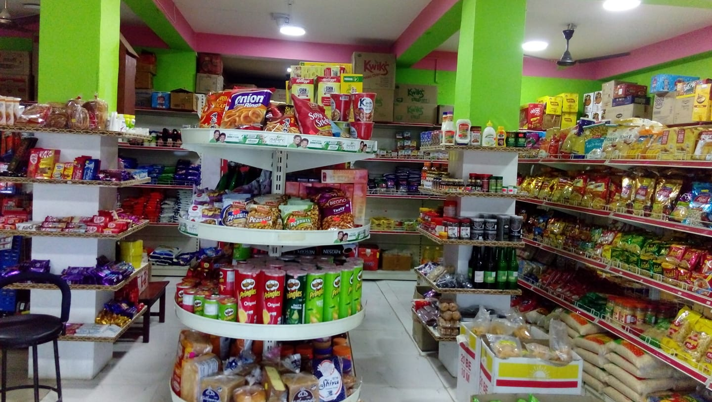

WELCOME TO BINAYAK MINIMART
Bharatpur-5, Chitwan
BOTTOM

Binayak Minimart
A minimart is a small, self-service retail store that offers a variety of everyday products such as groceries, snacks, toiletries and other needed items in day to day life. It is located in Bharatpur-5, Chitwan (Near Aayodhya Bhawan), lies in the main road of Madi-Thori Highway ( Way to geetanagar ) designed to serve customers who need quick access to essential goods in daily life. This minimart offers various products that are used in daily life.
Characteristics of a Minimart:
- Size and Layout: Minimarts are usually smaller than supermarkets. The store layout is simple, with shelves displaying products within easy reach, making it easy for customers to find the needed things.
- Product Range:Products in a minimart is limited compared to larger supermarkets, it focuses on high-demand, everyday needs. Common items include canned goods, packaged food, dairy products, snacks, personal care items, and sometimes household cleaning products also.
- Convenience: Minimarts are designed for convenience. It is opended from 5 A.M to 10 P.M allowing customers to pick up items at any time what they need. Some minimarts are opened for 24 hours.
- Target Audience: Minimarts cater to busy individuals, families, and people who need to grab essential items on the go. It targets the local customers for needed things.
- Location: The success of a minimart largely depends on its location. They are strategically placed in densely populated areas, near public transport hubs, or in locations with high foot traffic to maximize accessibility.
- Pricing: Prices at minimarts are generally higher than in larger supermarkets, as they offer easy and a smaller selection of goods.

Binayak Minimart Inside View
TOP